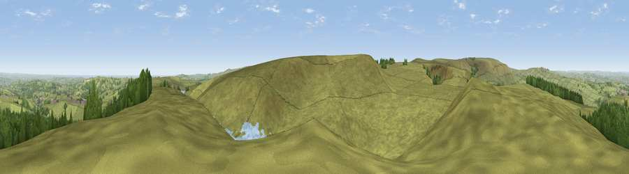

Viewpoint near Hade Edge
#10364 in England · top 12% of its area beats it · near Hade EdgeThe view, rendered

A 360° render of this exact spot computed from the terrain model, tree cover and land cover — summer colours, afternoon light, calibrated against photographs of famous viewpoints. Real trees, hedges and buildings will differ in detail.
The panorama
Grey silhouette: terrain skyline in each direction (720 bearings, Earth curvature and refraction included). Dashed green: skyline with trees (+15 m) and buildings (+8 m) as obstacles. Blue strip: how far the ground is visible on each bearing.
Where the view opens
Wedge length = distance to the farthest visible ground on that bearing (vegetation-aware). Rings at 10, 25 and 50 km.
What fills the view
87% grassland · 9% woodland · 2% water · 1% built-up ·
Angular shares of the visible panorama (visual magnitude), not map area. Landscape diversity 0.22 (0–1 Shannon).
Key numbers
More beautiful places nearby
The staircase of upgrades: each row has a higher view potential than everything closer. Driving times are estimates from straight-line distance, calibrated against real road routing — check an actual route before setting out.
| Place | Direction | Drive | Score |
|---|---|---|---|
| Viewpoint near Hade Edge | SSW · 3 km | ~6 min | 63.9 |
| Viewpoint near Lane | WSW · 3 km | ~7 min | 66.1 |
| Viewpoint near Lane | WNW · 4 km | ~9 min | 68.5 |
| Cheese Gate Nab | ENE · 5 km | ~11 min | 69.9 |
| Viewpoint near Jackson Bridge | NE · 6 km | ~12 min | 73.5 |
| Viewpoint near Greenfield | W · 13 km | ~24 min | 76.0 |
| Viewpoint near Carrbrook | WSW · 15 km | ~26 min | 77.1 |
| Viewpoint near Edenfield | WNW · 34 km | ~52 min | 77.5 |
53.53362, -1.80194 · source: screening · position refined by local search. Computed location — check access rights before visiting.